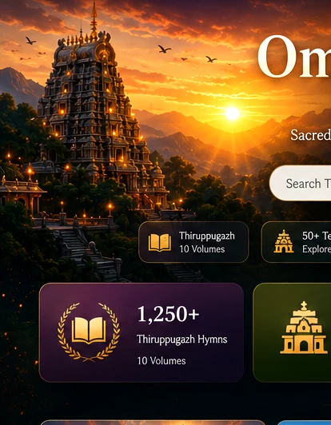
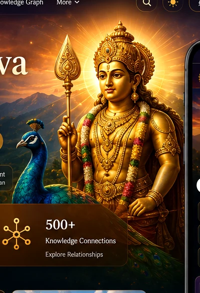
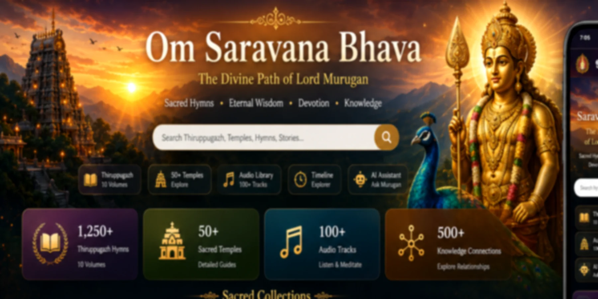
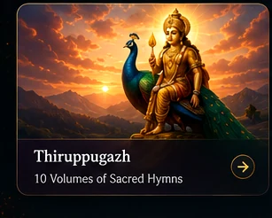
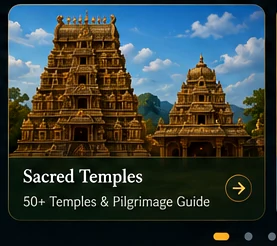
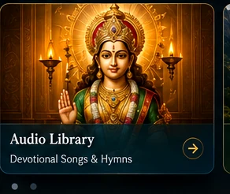
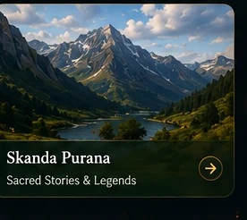

Canonical full-song records


வேல் · மயில் · அருள்
ஓம் சரவணபவ
The Divine Path of Lord Murugan
Sacred hymns, timeless wisdom, temple traditions and devotional learning—designed for Tamil communities across the world.
Sacred temple records
Governed audio-status records
Governed public routes
Sacred collections
Begin with devotion. Continue with knowledge.
Every destination below links to an existing published or governed module. Decorative cards no longer replace real content.

Murugan Song LibraryCollections, reading formats, audio and source status
ThiruppugazhSacred Tamil hymns and meanings
Sacred TemplesArupadai Veedu and pilgrimage guides
Slokas & PrayersTamil, transliteration and meaning
Murugan TimelineStories, traditions and sacred placesRestored complete navigation
All existing tools remain available.
The premium homepage restores reading, personal-library, discovery, accessibility, recovery and content-quality routes that became less visible after earlier visual redesigns.
⌕DiscoverPurpose-led route discovery
▤ReadContinue eligible reading
✎NotesBrowser-local reflections
♡My LibrarySaved and recent routes
▦CollectionsOrganise published routes
✓Practice PlannerBounded local planning
⇄Personal DataExport and restore locally
≡Search FacetsBrowse by content type
◐AccessibilityReading preferences
▣Print & PDFClean reading output
♫Audio HistoryDevice read-aloud activity
⚙MaintenanceLocal cache and recovery
☷Site DirectoryComplete governed routes
↺Route RecoveryPhase D–E connectivity evidence
◎Content CompletenessPhase F source and format gaps
✦Platform HubAll integrated releases
ஆறுபடை வீடு
The Six Sacred Abodes
Explore Tirupparankundram, Tiruchendur, Palani, Swamimalai, Tiruttani and Pazhamudircholai through a visual, source-aware temple journey.
Explore all templesCommand Search
Press Ctrl/Command + K to search every governed route privately in the browser.
Offline Access
Core pages remain available through the PWA and browser-local tools.
Tamil First
Tamil-first navigation with clear English support and learner formats.
Accessible Motion
Keyboard access, visible focus and reduced-motion preferences remain respected.